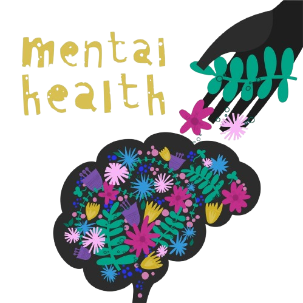

PROFESSIONAL HELPLINE
Call Now 1737
YOUR GUIDE TO MENTAL HEALTH
Welcome to your safe space for understanding, managing, and improving mental well-being. Here, you’ll find clear information on common mental health conditions like anxiety, depression, and PTSD, along with practical advice on recognizing symptoms and getting help. Whether you're seeking therapy, exploring self-care strategies, or looking for support as a parent, teen, our resources are here for you. Discover treatment options, read personal stories, access emergency support, and stay informed through our blog. Wherever you are on your mental health journey, you’re not alone — and this is a place to start healing.
FACTS
- 1 in 4 people will experience a mental health issue in their lifetime.
- 18–20% of people each year face conditions like anxiety or depression.
- Mental health challenges vary by age, location, and access to care
- In New Zealand, nearly 50% of the population will face mental health challenges.
- Young people are experiencing rising levels of stress.
- Anxiety and depression are the most common mental health conditions worldwide.
- There is a growing need for accessible mental health support and resources.
IMPACT OF BAD MENTAL HEALTH
- increase risk of chromic diseases
- Trouble concentrating or making decisions
- Feelings of hopelessness or worthlessness
- poor sleep schedule
- substance abuse
- criminal behaviour
- encounters with the justice system
- increased risk of victimization (people with mental health illness are more likely to be victims than perpetrators
Mental health issues can sometimes lead to:
HELPFUL TIPS
- Establish a Routine
- Stay Physically Active
- Talk About Your Feelings
- Set Realistic Goals & Celebrate Small Wins
- Reflect and Journal
- Engage in Physical Activity
“You are not alone. You are seen. I am with you. You are not alone.”